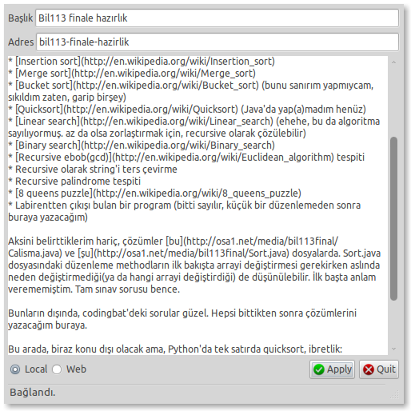

December 23, 2010 - Tagged as: java, tr.
Bugün bil113 final için birkaç satır birşeyler yazdım, Deitel’den Java: How to Program’a baktım biraz. Deitel’in Python kitabı rezaletti, ama bu iyiymiş(Amazon’dan da çılgın puanlar almış zaten). Recursion, searching and sorting bölümlerinin alıştırmalarını falan çözdüm. Kağıt üzerinde yine bildiğimizden çok az puanlar alacağız ama, neyse..
Hazırlık için çözülebilecek bazı klasik basit problemler:
Aksini belirttiklerim hariç, çözümlerim bu ve şu dosyalarda(main methodları testlerim için). Sort.java dosyasındaki düzenleme methodların ilk bakışta arrayi değiştirmesi gerekirken aslında neden değiştirmediği(ya da hangi arrayi değiştirdiği) de düşünülebilir. İlk başta anlam verememiştim. Tam sınav sorusu bence.
Bunların dışında, codingbat’deki sorular güzel. Hepsi bittikten sonra çözümlerini yazacağım buraya.
Bu arada, biraz konu dışı olacak ama, Python’da tek satırda quicksort, ibretlik:
def qsortr(list):
return [] if list==[] else qsortr([x for x in list[1:] if x < list[^0]) + [list[^0] + qsortr([x for x in list[1:] if x >= list[^0])Bu arada(2), bu yazıyı aşağıda ekran görüntüsünü görebileceğiniz programla ekliyorum: 
Bunu da yine fizik finalinden önce yazmıştım. Burda, adres satırı Django admin’de olduğu gibi, yazı başlığından otomatik olarak üretiliyor. Henüz bazı durumlarda yanlış sonuçlar verebiliyor. Tek tuşla yazılı django development server’da ekliyorum, kontrol edip, web’e tıklıyorum ve bir daha gönderiyorum. Çok pratik oldu. Normalde localde admin panelinden yazıyı ekleyip, herşey tamamsa, webe kopyalıyordum. Şimdilik sadece benim yönetici panelimde çalışsa da, biraz düzenlemeyle istediğim esnekliğe getireceğim programı. Daha sonra birkaç ekleme daha yapıp burada yayınlayacağım yine.(örneğin dosya upload işini daha kolaylaştıracak birşeyler ekledikten sonra)
Yazı eklemeyi daha da kolay hale getirebilmek için önceki projelerimden bkz. nautilus için ftp upload scripti